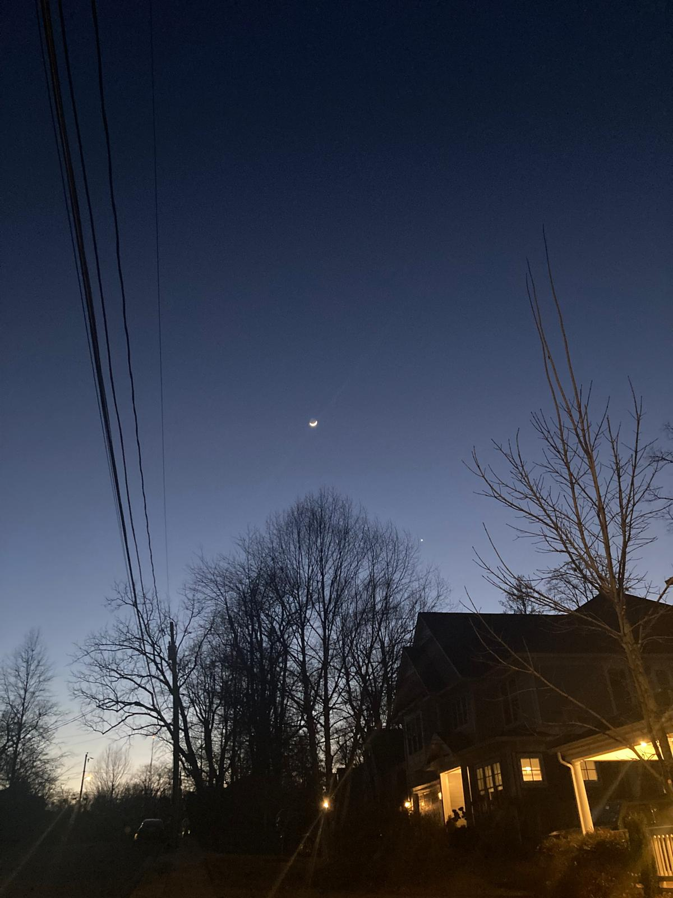
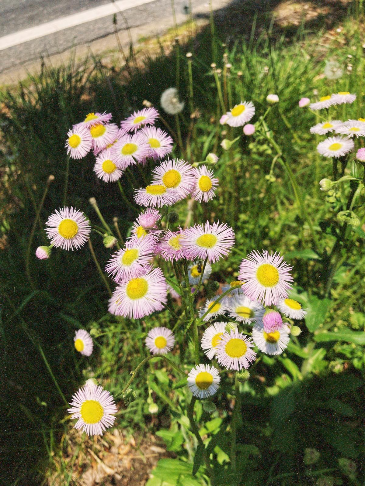
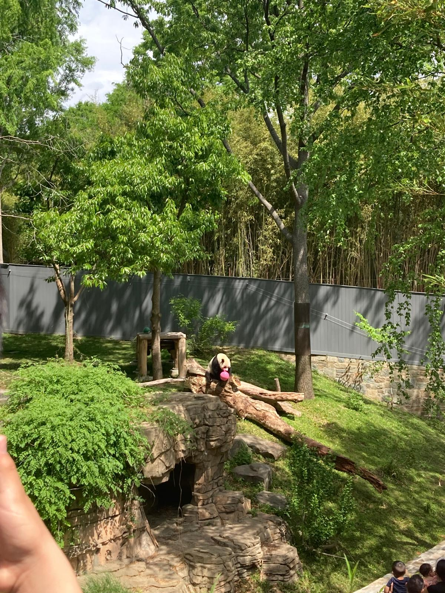
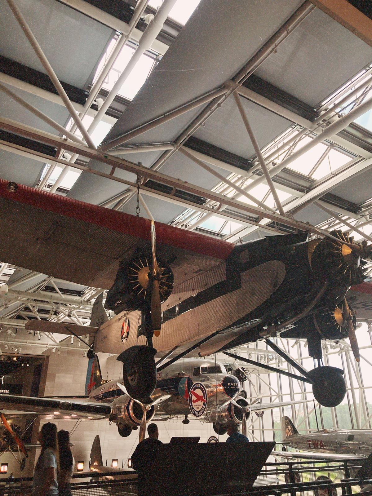
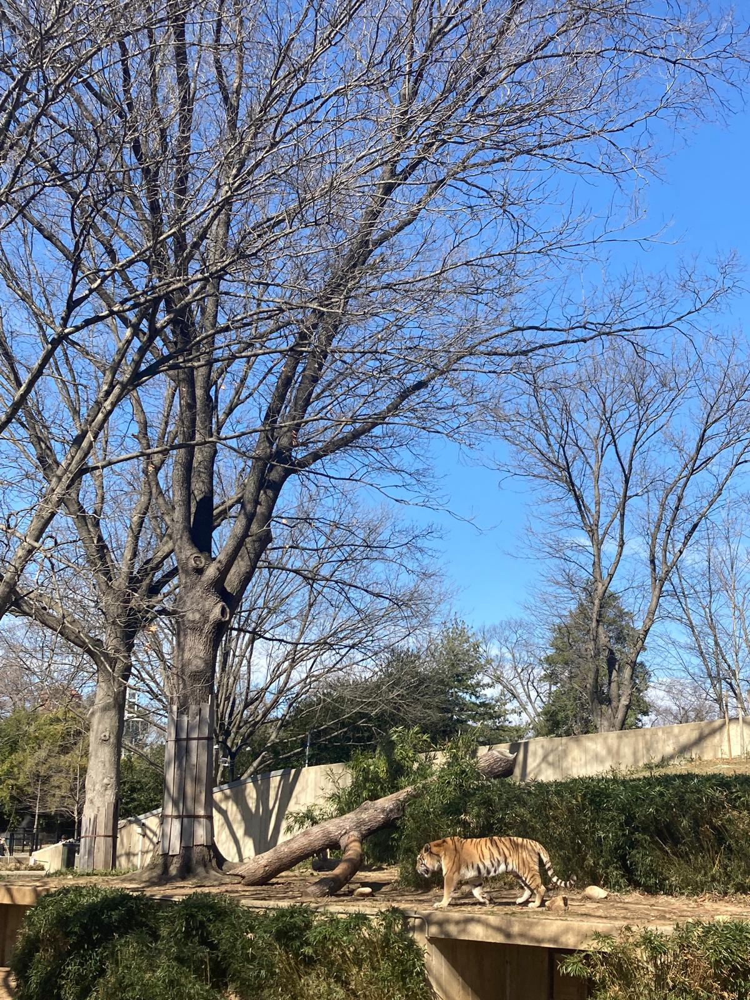

I came to the US to work as an Au Pair, it's been a great opportunity coming to a different country and practice a foreign language. I would say that living in Falls Church is a bonus because is such a great city to live! First of all, we have everthing here, stores, malls, restaurants, metro station, etc. But we're also close to Washington DC, so there's several others places to go, and so many museums to visit!




